Performance
How does FsPickler compare against other .Net serialization libraries in terms of performance? In this section we present a few microbenchmarks: we compared FsPickler against BinaryFormatter, NetDataContractSerializer, Json.Net, ServiceStack.Text and ProtoBuf-Net. Code used to run the tests is available in the FsPickler.PerfTests project.
Execution Time
The first set of tests measures execution time. Performance testing was done using the PerfUtil library. Libraries not appearing in charts failed to serialize the tested objects. Benchmarks are indicative and in no way scientific.
System.Tuple
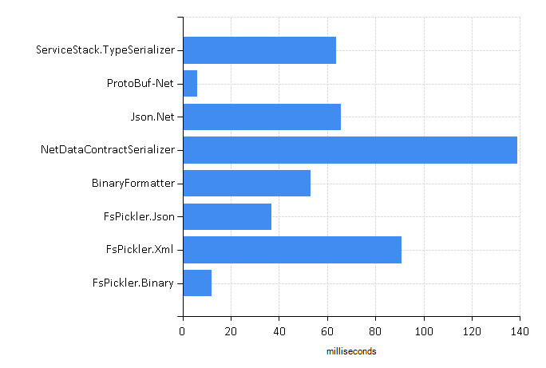Array of Tuples
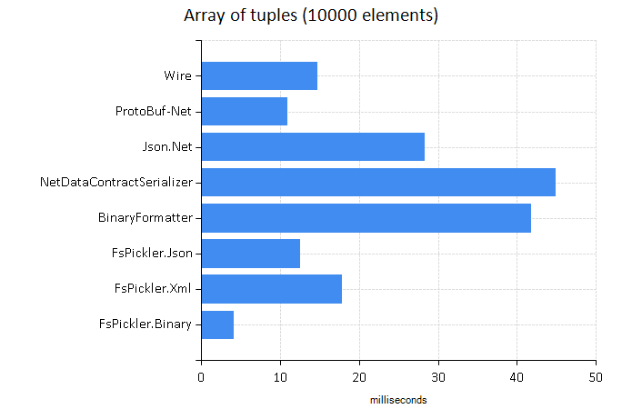Simple Record Class
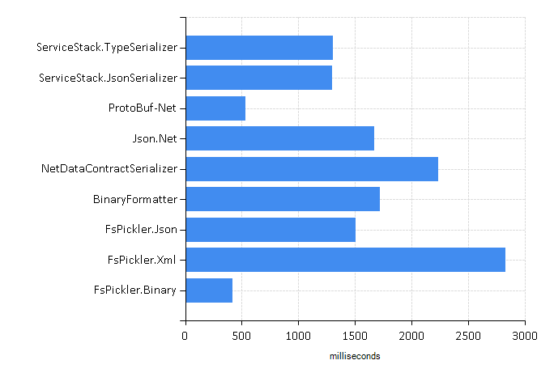ISerializable Class
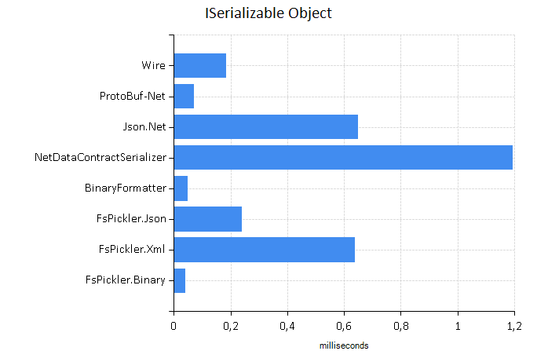Generic Dictionary
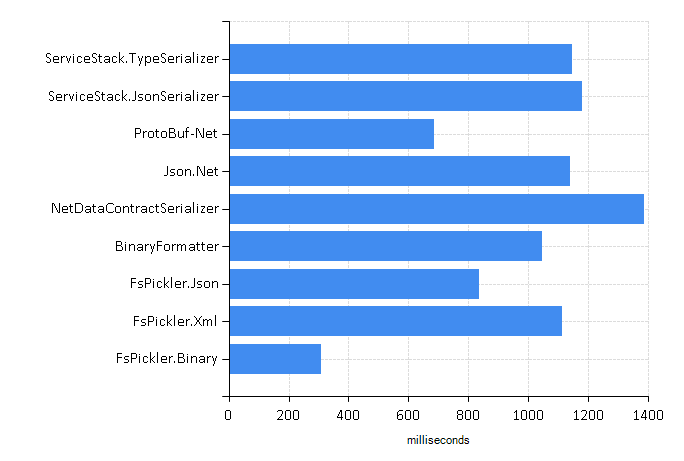Binary Tree
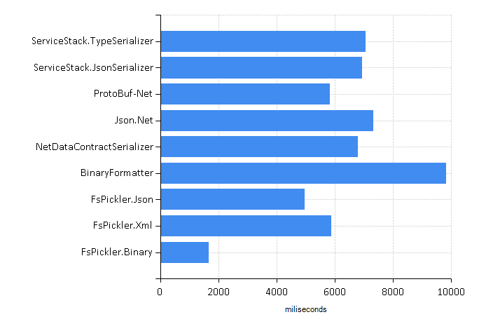F# list of integers
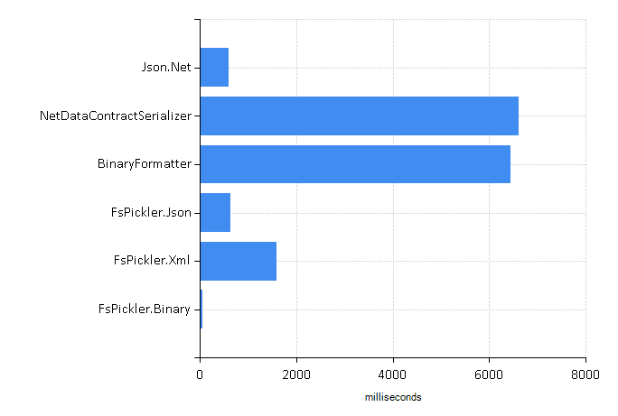F# list of tuples
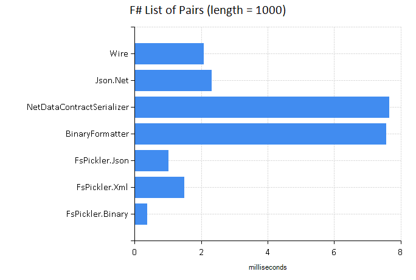Array 3D (float, 200 x 200 x 200)
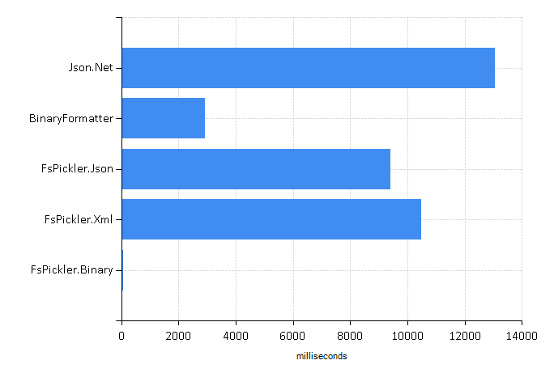F# mutual recursive types
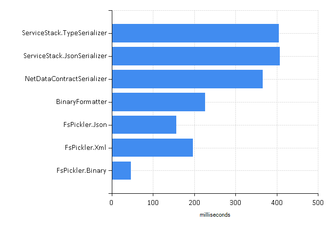F# Quotation
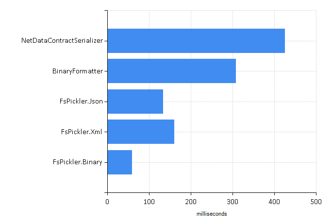Random object graph (n = 500, Pb = 20%)
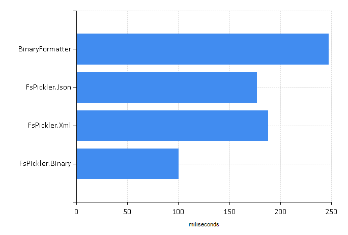Serialization Size
The second set of tests compare the size (in bytes) of serialized objects. Libraries not appearing in charts failed to serialize the tested objects.
System.Integer
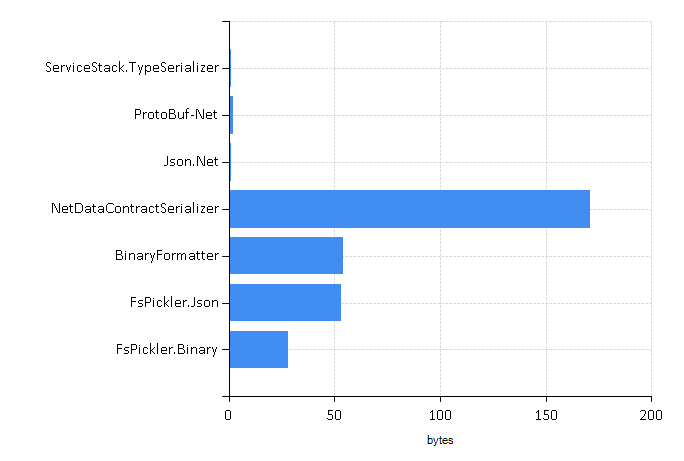System.Tuple
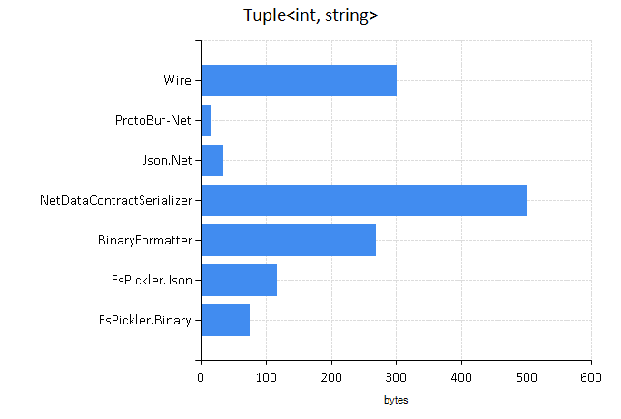Integer Array (10^6 elements)
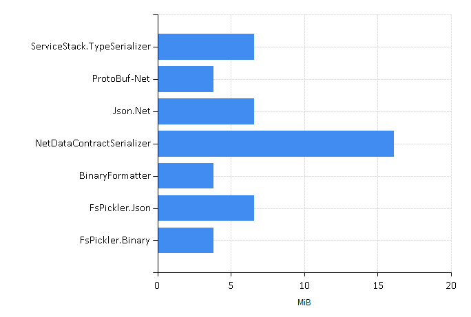Pair Array (10000 elements)
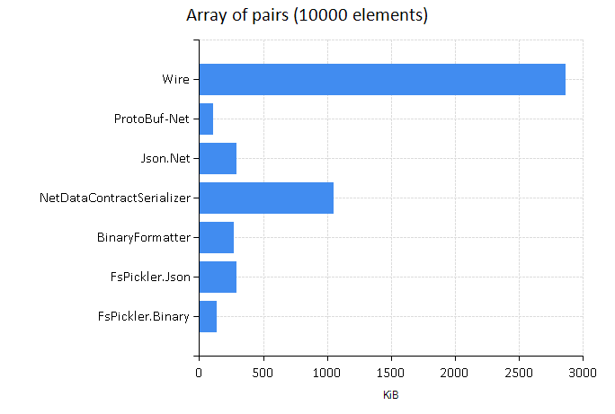3D float Array (100x100x100)
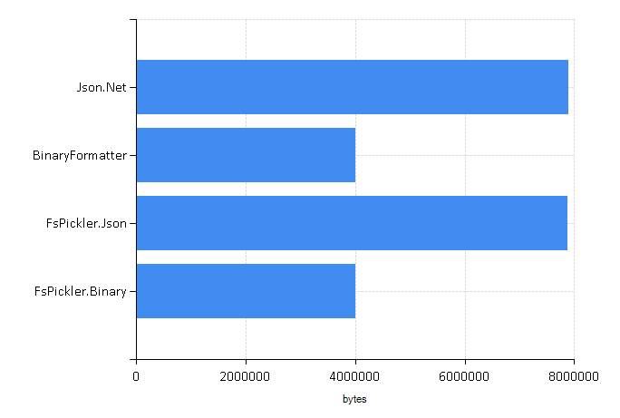F# List of Integers (1000 elements)
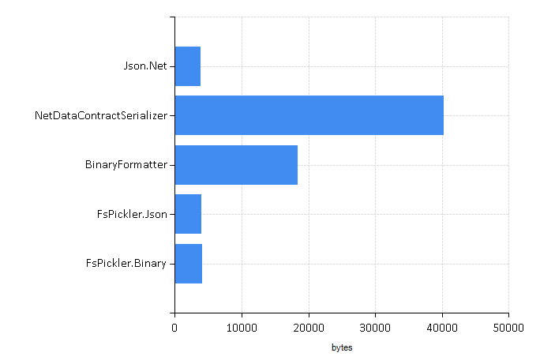F# List of Pairs (1000 elements)
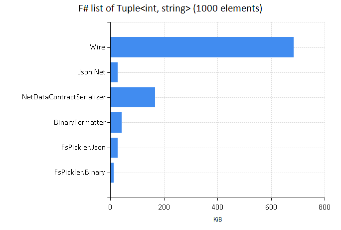Record